// EN VIVO TÓPICOS DE TECNOLOGÍAS DE DATOSCASO DE ESTUDIO: POWER BIUAEM VALLE DE CHALCO - 9NO SEMESTRE// EN VIVO TÓPICOS DE TECNOLOGÍAS DE DATOSCASO DE ESTUDIO: POWER BIUAEM VALLE DE CHALCO - 9NO SEMESTRE
[ INVESTIGACIÓN ]
POWER BI
Práctica 1
Introducción
Power BI es una plataforma de análisis empresarial (business intelligence) de Microsoft que permite conectar, transformar, visualizar y compartir datos para convertirlos en información procesable.
Es una solución de autoservicio que facilita la creación de informes interactivos y paneles de control, permitiendo a los usuarios tomar decisiones informadas de forma rápida, incluso sin ser expertos en programación.
/ Fuente: Microsoft Power BI /
Power BI Mobile
La aplicación móvil de Microsoft Power BI te permite acceder de forma segura y ver tus datos empresariales en vivo desde cualquier dispositivo con sistemas operativos iOS o Android.
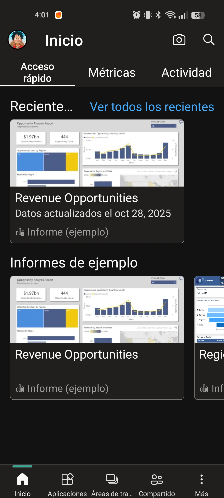
/ Evidencia: Pantalla de inicio /
Pantalla de inicio
La pantalla de 'Inicio' es el punto de entrada principal. Organiza el contenido en tres pestañas: 'Acceso rápido', que muestra informes recientes y ejemplos; 'Métricas', para el seguimiento de KPIs; y 'Actividad', que registra las últimas notificaciones y actualizaciones. Esto permite al usuario localizar rápidamente la información más relevante.
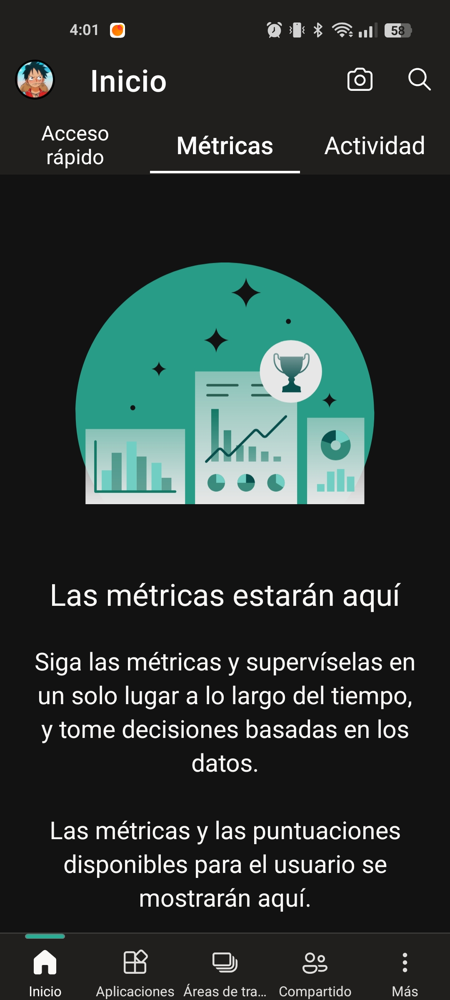
/ Evidencia: Pestaña de Métricas /
Pestaña de Métricas
Esta sección está diseñada para el seguimiento centralizado de los KPIs (Indicadores Clave de Rendimiento). Como indica la pantalla, permite a los usuarios "seguir las métricas y supervisarlas en un solo lugar a lo largo del tiempo", facilitando la toma de decisiones basadas en datos. Las puntuaciones y métricas disponibles para el usuario se mostrarán aquí.
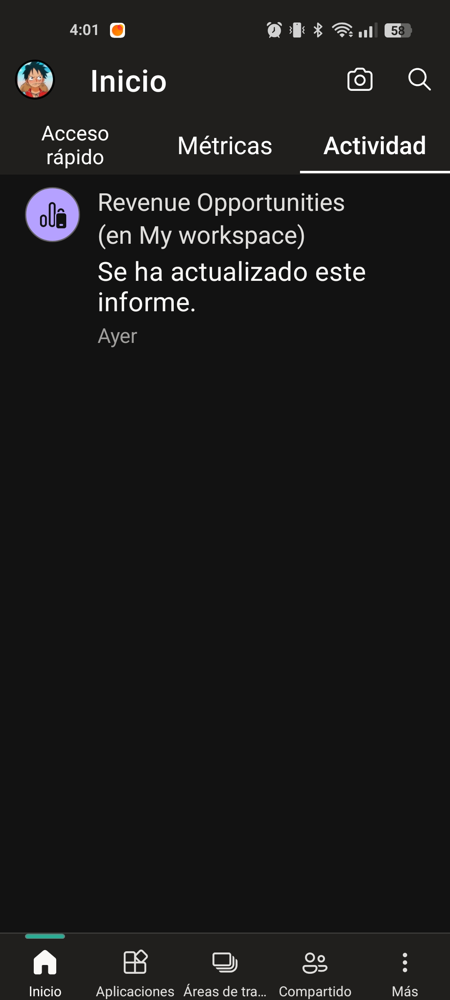
/ Evidencia: Pestaña de Actividad /
Pestaña de Actividad
La pestaña de 'Actividad' funciona como un registro de notificaciones y actualizaciones recientes. Aquí los usuarios pueden ver cuándo se han actualizado los informes (como el ejemplo "Revenue Opportunities"), asegurando que estén siempre al tanto de los cambios más importantes en sus datos. Es un centro de información en tiempo real sobre la frescura de los datos.
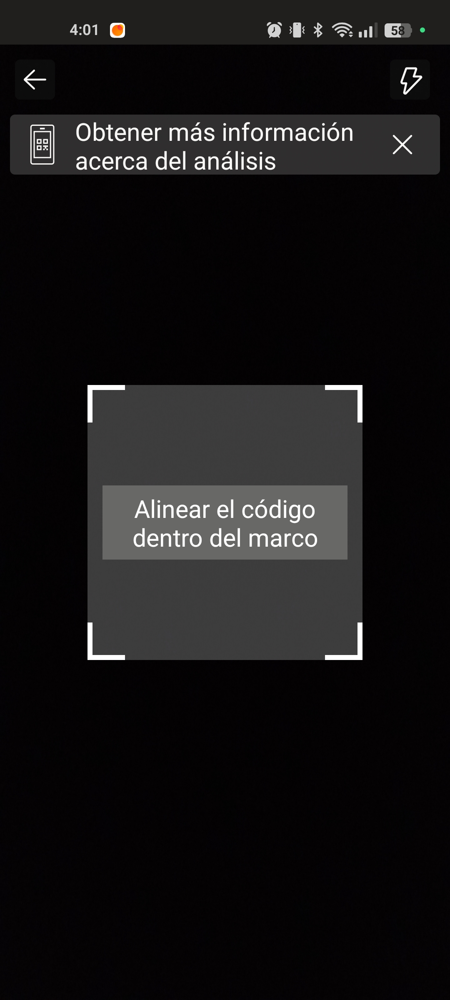
/ Evidencia: Escáner de cámara /
Escáner y Realidad Aumentada
La aplicación integra la cámara del dispositivo para escanear códigos QR y códigos de barras. Esta función permite a los usuarios vincular objetos del mundo real (como maquinaria en una fábrica o productos en un estante) directamente a informes de Power BI. Al escanear un código, la app filtra automáticamente el informe para mostrar solo los datos relevantes a ese objeto específico, facilitando el acceso a "Obtener más información acerca del análisis" en contexto.
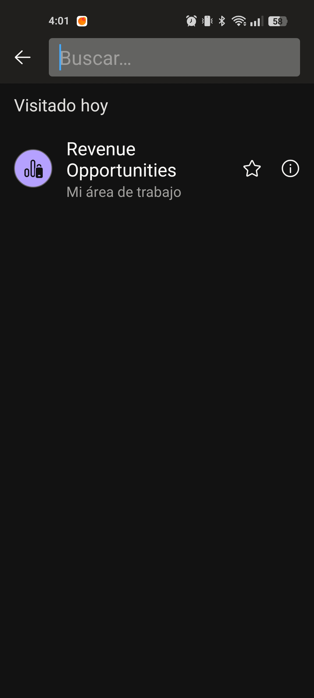
/ Evidencia: Función de Búsqueda /
Búsqueda y Acceso Rápido
La funcionalidad de búsqueda global permite a los usuarios encontrar rápidamente informes, paneles y aplicaciones dentro de su área de trabajo. Al acceder a la búsqueda, la aplicación también muestra de forma inteligente el contenido "Visitado hoy", como el informe "Revenue Opportunities", lo que agiliza el flujo de trabajo y permite reanudar tareas recientes con un solo toque.
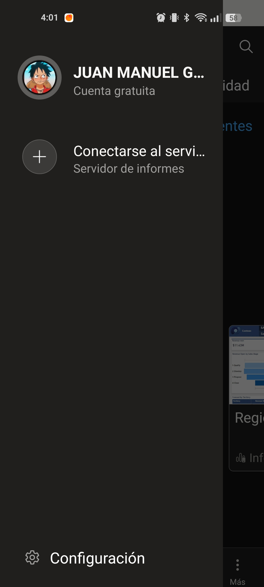
/ Evidencia: Perfil y Conexiones /
Gestión de Cuenta y Servidor
Al tocar la imagen de perfil, se accede a la pantalla de gestión de cuenta. Aquí, el usuario puede ver la cuenta activa (en este caso, "JUAN MANUEL G..." como cuenta gratuita). Esta sección también es crucial para la conectividad, ya que ofrece la opción de "Conectarse al servidor" para vincular la aplicación a un servidor de informes local (Report Server). Además, en la parte inferior, se encuentra el acceso a la "Configuración" general de la aplicación.
Pantalla de Configuración
La sección de 'Configuración' proporciona un control granular sobre la aplicación. Se divide en varias categorías clave: Cuentas, para gestionar el inicio de sesión y la conexión a servidores; Preferencias, donde se ajustan opciones como las notificaciones, la barra de Copilot y el comportamiento de la pulsación única; Apariencia y Accesibilidad, para cambiar el tema del sistema y activar el lector de datos; Privacidad y Seguridad; y finalmente, Ayuda y comentarios junto con la información "Acerca de", que muestra la versión de la app y el Id. de sesión.
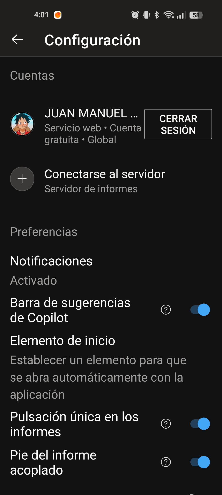
/ Evid: Cuentas y Preferencias /
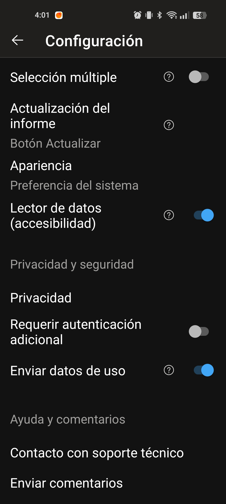
/ Evid: Apariencia y Privacidad /
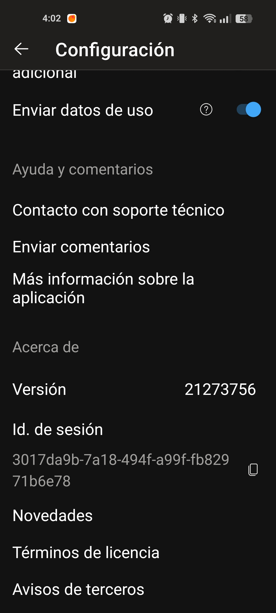
/ Evid: Ayuda y Acerca de /
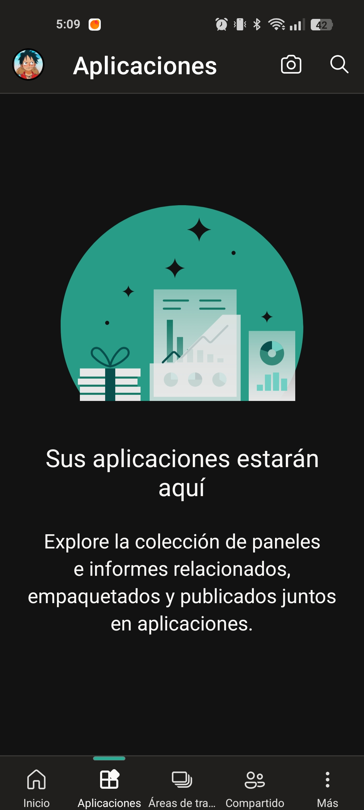
/ Evidencia: Pestaña de Aplicaciones /
Pestaña de Aplicaciones
La pestaña 'Aplicaciones' es el contenedor de colecciones de contenido de Power BI. Como indica la pantalla, aquí es donde los usuarios pueden "explorar la colección de paneles e informes relacionados, empaquetados y publicados juntos". Es un centro para acceder a soluciones de análisis preempaquetadas que combinan múltiples informes y conjuntos de datos en una sola vista coherente.
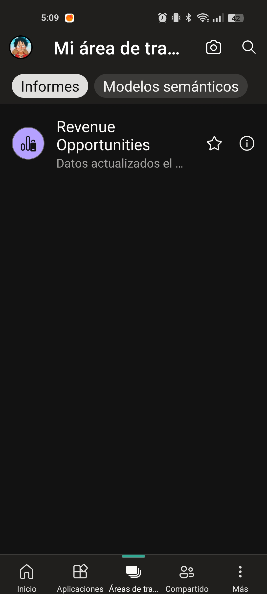
/ Evidencia: Mi área de trabajo /
Áreas de Trabajo
La pestaña 'Áreas de trabajo', como "Mi área de trabajo" en este caso, es el espacio de colaboración y almacenamiento principal. Aquí es donde se organizan los "Informes" y los "Modelos semánticos" (anteriormente conocidos como conjuntos de datos). La vista muestra el contenido disponible, como el informe "Revenue Opportunities", indicando cuándo fueron actualizados sus datos.
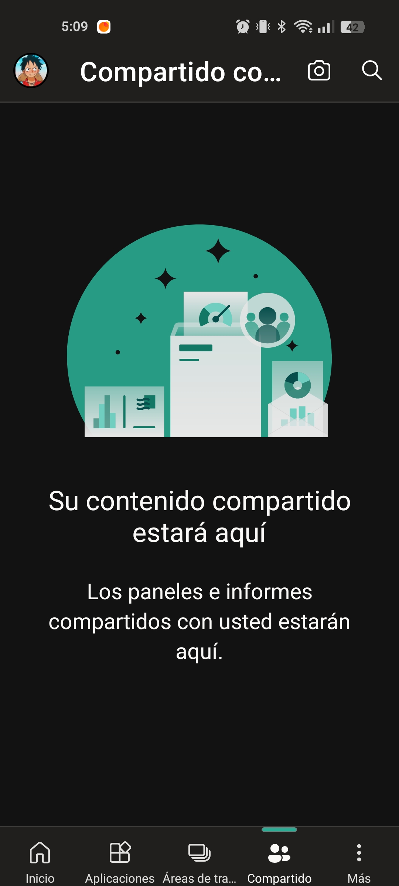
/ Evidencia: Compartido conmigo /
Compartido conmigo
Esta sección centraliza todo el contenido que otros usuarios han compartido. Como indica la pantalla, "Los paneles e informes compartidos con usted estarán aquí". Esto simplifica la colaboración y el acceso a análisis de otros miembros del equipo sin necesidad de buscarlos en diferentes áreas de trabajo.
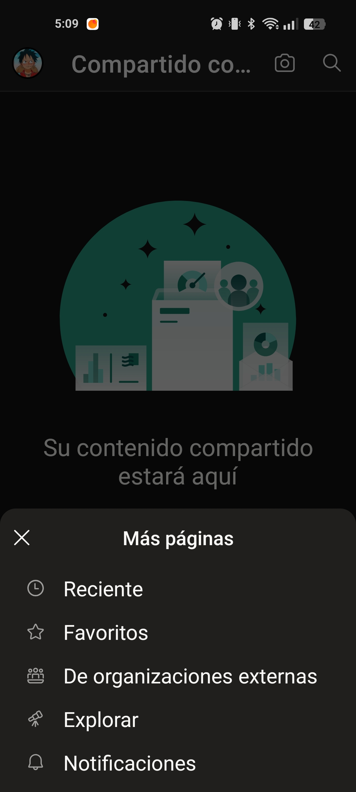
/ Evidencia: Menú "Más" /
Menú "Más páginas"
Al pulsar el icono de "Más" (tres puntos) en la barra de navegación inferior, se despliega un menú contextual con acceso a "Más páginas". Este menú incluye accesos directos a secciones importantes como "Reciente", "Favoritos", contenido "De organizaciones externas", la función de "Explorar" y el centro de "Notificaciones", consolidando la navegación secundaria en un solo lugar.
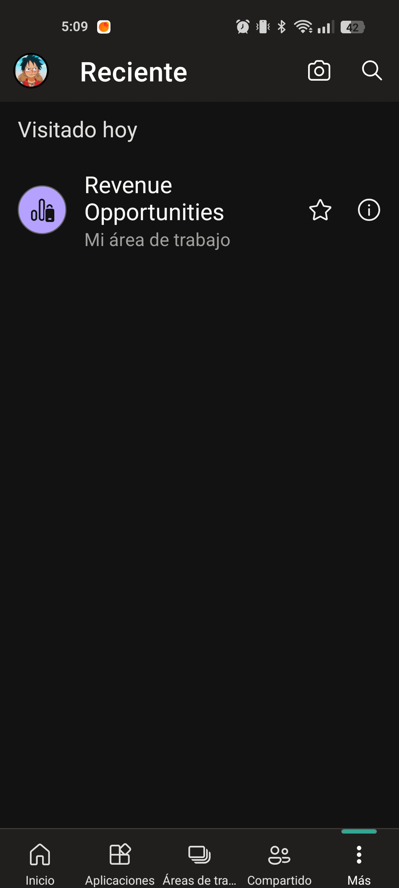
/ Evidencia: Pestaña Reciente /
Navegación: Reciente
La sección "Reciente" organiza el contenido visitado recientemente, mostrando específicamente lo que se ha accedido "Hoy". Como se ve en la imagen, incluye elementos como "Revenue Opportunities" y "Mi área de trabajo", permitiendo un acceso rápido a los recursos más utilizados recientemente sin necesidad de buscar en las diferentes áreas de trabajo.
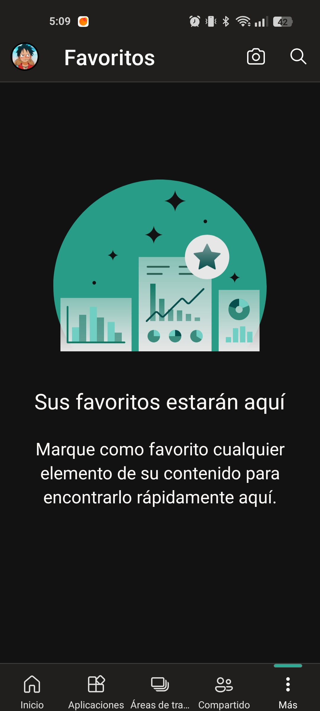
/ Evidencia: Pestaña Favoritos /
Navegación: Favoritos
La sección "Favoritos" actúa como un espacio personalizado donde los usuarios pueden marcar sus informes y paneles más importantes. Como indica la interfaz, "Marque como favorito cualquier elemento de su contenido para encontrarlo rápidamente aquí", proporcionando un acceso instantáneo a los recursos más valiosos sin importar dónde estén almacenados originalmente.
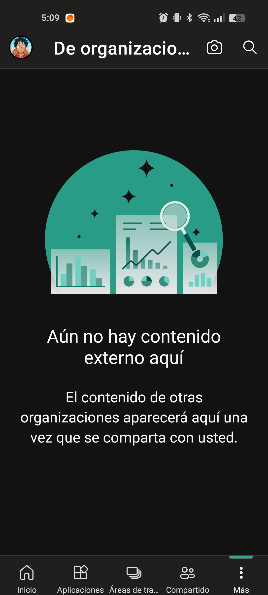
/ Evidencia: De organizaciones /
Navegación: De organizaciones
La sección "De organizaciones" está diseñada para contenido compartido desde otras organizaciones. Como se muestra, "El contenido de otras organizaciones aparecerá aquí una vez que se comparta con usted", facilitando la colaboración interorganizacional y el acceso a análisis externos sin mezclarlos con el contenido interno.
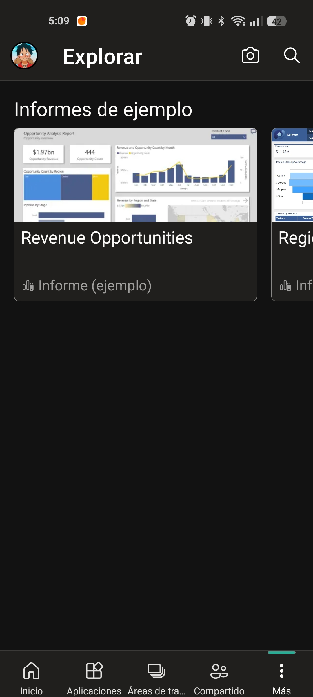
/ Evidencia: Pestaña Explorar /
Navegación: Explorar
La sección "Explorar" incluye "Informes de ejemplo" como "Revenue Opportunities", "Regio" y "Informe (ejemplo)". Esta área es ideal para nuevos usuarios que desean familiarizarse con las capacidades de Power BI o para descubrir nuevos enfoques analíticos a través de ejemplos predefinidos.
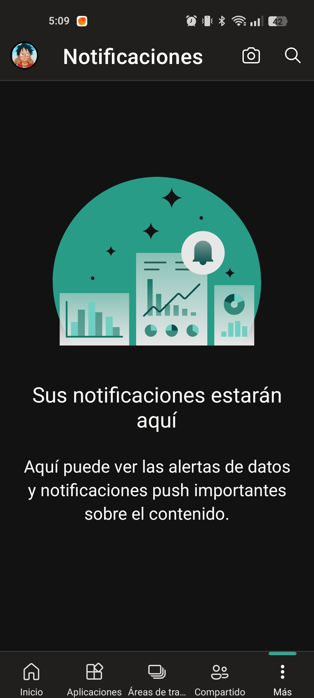
/ Evidencia: Pestaña Notificaciones /
Navegación: Notificaciones
El centro de "Notificaciones" centraliza todas las alertas importantes. Como se describe, "Aquí puede ver las alertas de datos y notificaciones push importantes sobre el contenido", asegurando que los usuarios estén siempre informados sobre actualizaciones críticas, cambios en los datos o eventos relevantes que requieran su atención inmediata.
Sub-Sección: Interacción con Reportes
Una vez dentro de un informe, la aplicación móvil de Power BI ofrece una barra de herramientas inferior con múltiples opciones para la colaboración y el análisis interactivo.
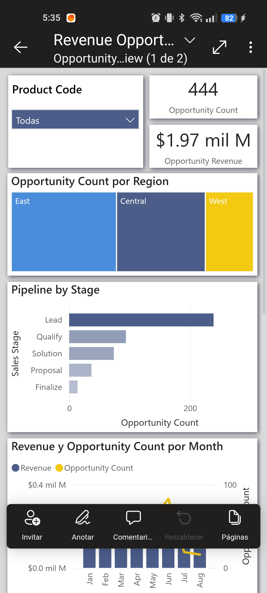
/ Evidencia: Barra de Herramientas /
Vista de Reporte y Barra de Herramientas
Al abrir un informe, se muestra la visualización de datos principal (en este caso, "Revenue Opportunities"). En la parte inferior, una barra de herramientas proporciona acceso rápido a cinco funciones clave: Invitar (para compartir), Anotar (para dibujar sobre el informe), Comentarios (para colaborar), Restablecer (para volver al estado original) y Páginas (para navegar entre las páginas del informe).
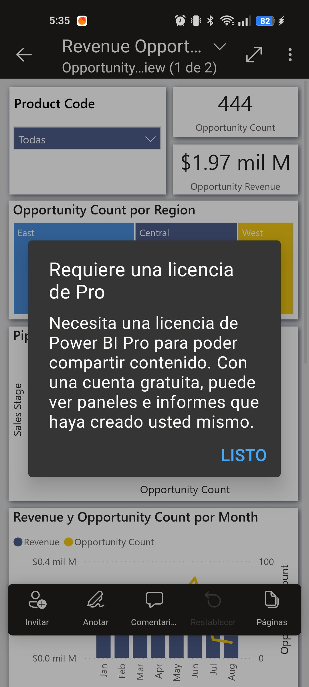
/ Evidencia: Licencia Pro Requerida /
Función de Compartir (Invitar)
Al intentar "Invitar" o compartir un informe, la aplicación verifica el tipo de licencia. En este caso, con una cuenta gratuita, aparece un mensaje emergente indicando que "Requiere una licencia de Pro" para poder compartir contenido. Esto resalta el modelo de licenciamiento de Power BI, donde las funciones de colaboración y distribución están reservadas para los usuarios con licencias de pago.
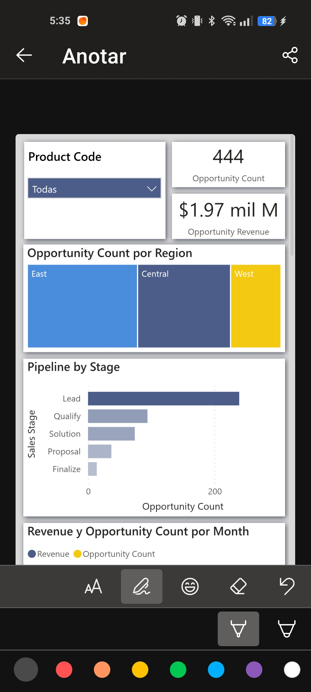
/ Evidencia: Herramientas de Anotación /
Función de Anotación
La función "Anotar" permite a los usuarios dibujar, escribir y añadir emojis directamente sobre una captura del informe. Esto es útil para resaltar puntos clave o hacer preguntas específicas sobre los datos. La barra de herramientas de anotación incluye opciones para cambiar el color del lápiz, añadir texto, emojis, un borrador y deshacer acciones.
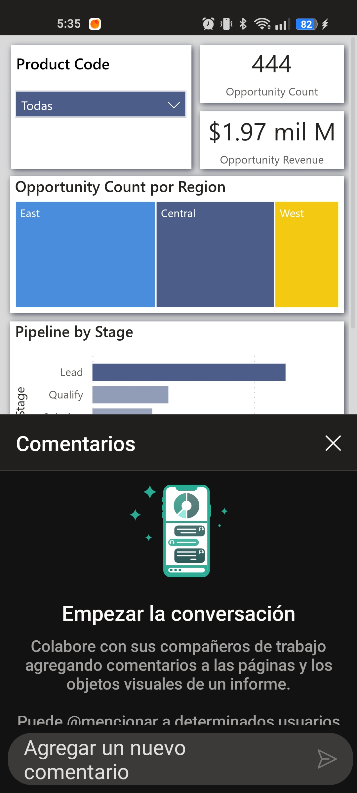
/ Evidencia: Panel de Comentarios /
Función de Comentarios
La sección de "Comentarios" abre un panel de conversación lateral. Aquí, los usuarios pueden "colaborar con sus compañeros de trabajo agregando comentarios a las páginas y los objetos visuales de un informe". Permite "@mencionar a usuarios específicos para iniciar una conversación contextualizada sobre los datos que se están visualizando, fomentando el trabajo en equipo.
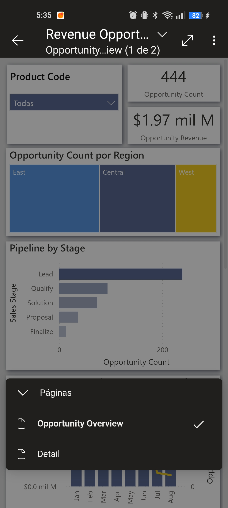
/ Evidencia: Menú de Páginas /
Navegación de Páginas
El botón "Páginas" despliega un menú inferior que lista todas las páginas disponibles dentro del informe. En este ejemplo, se muestra la página actual "Opportunity Overview" (marcada con un check) y la página "Detail". Esto permite una navegación rápida y sencilla entre las diferentes vistas y análisis que componen el informe completo.
Power BI Desktop
Power BI Desktop es la aplicación de creación y generación de informes para Windows. Es donde los analistas y desarrolladores se conectan a las fuentes de datos, transforman y modelan los datos, y diseñan los informes interactivos que luego se publicarán en el servicio de Power BI y se consumirán en aplicaciones móviles.
/ Pendiente: Añadir evidencias de Power BI Desktop /